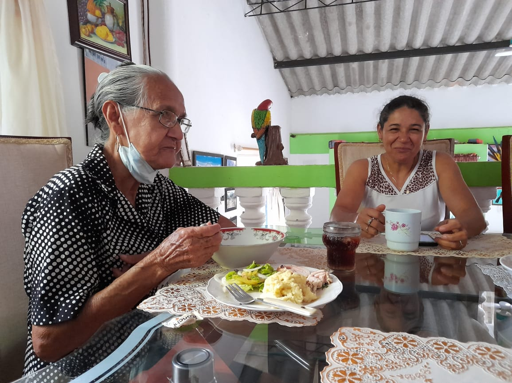
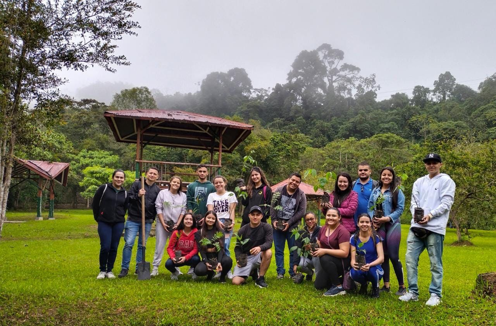

Maradey Mercedes Arias Mendoza
Feliz Cumpleaños
Feliz Cumpleaños

No es quizá la mejor familia del mundo pero es nuestra familia y aqu√≠ siempre tendrás con qui√©n contar, te queremosü§ç.
Que ch√©vere es tirar risotadas juntasü§≠

Cuando creas que estás sola mira esta foto y recuerda que abuela y mami hacen fuerza para que tú avances, porque te amanü§çü§ó
La gente'e barrio... Los diciembres más bonitos era cuando ellos estaban
Mendoza de pura cepaü§≠


Compartir cotigo es Genial

¡Eres súper genial!
Eres una fuente de inspiración